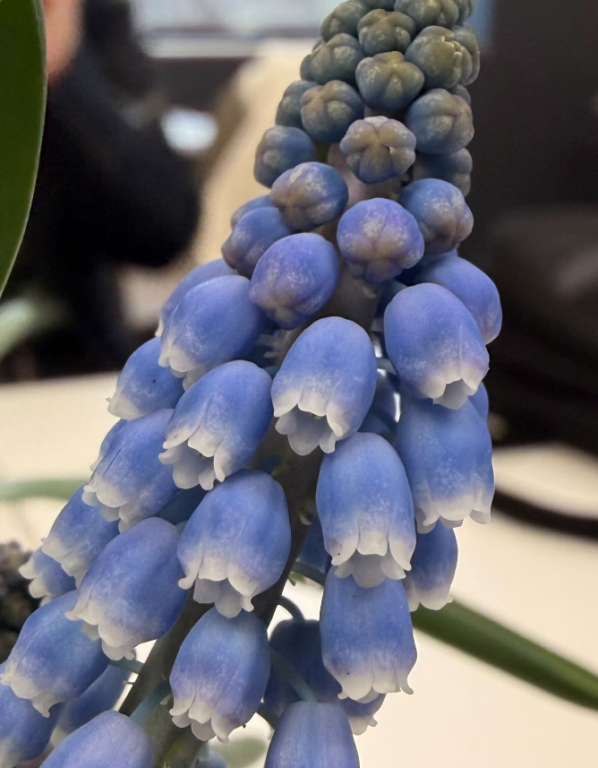
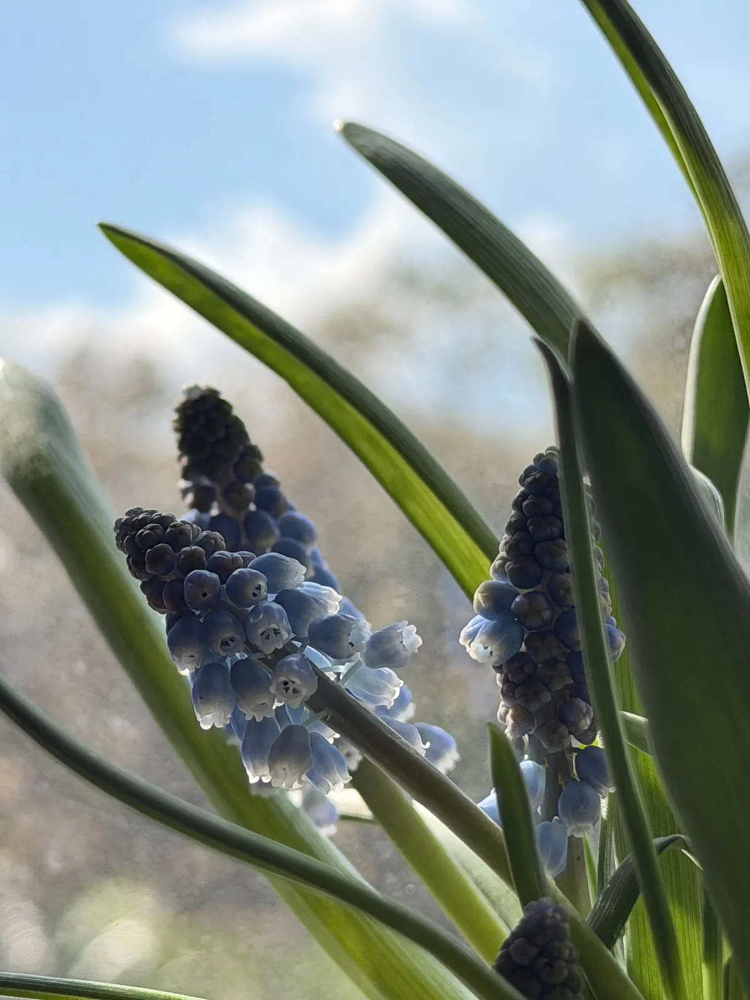
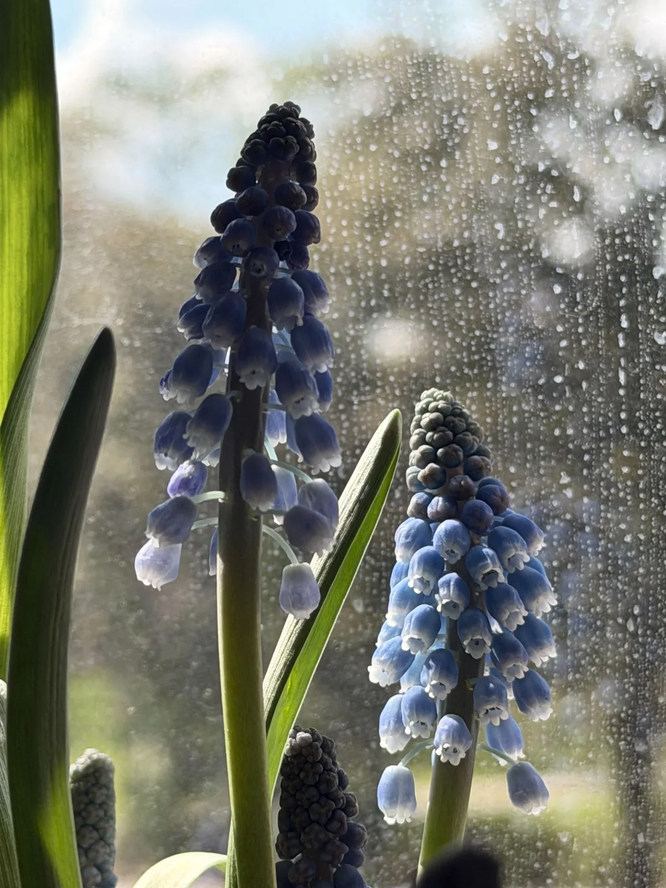
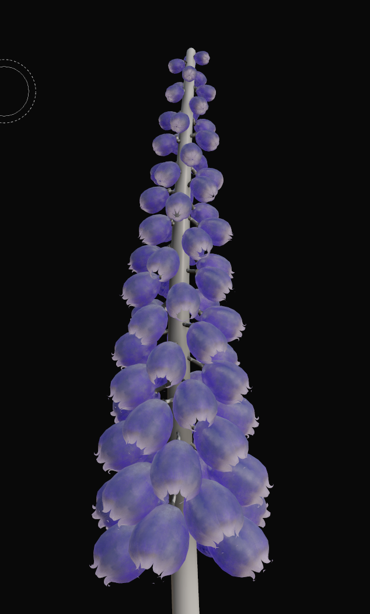
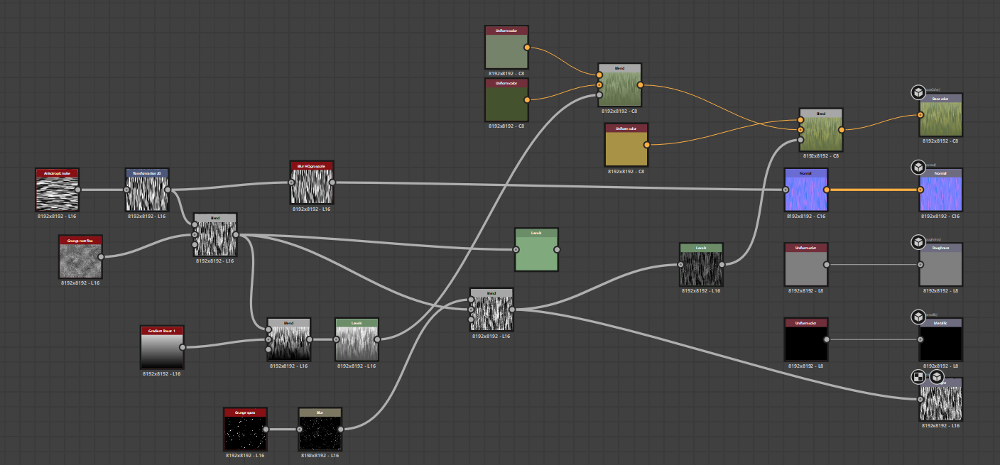
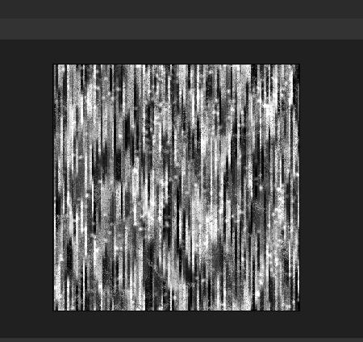
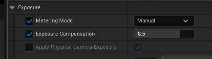
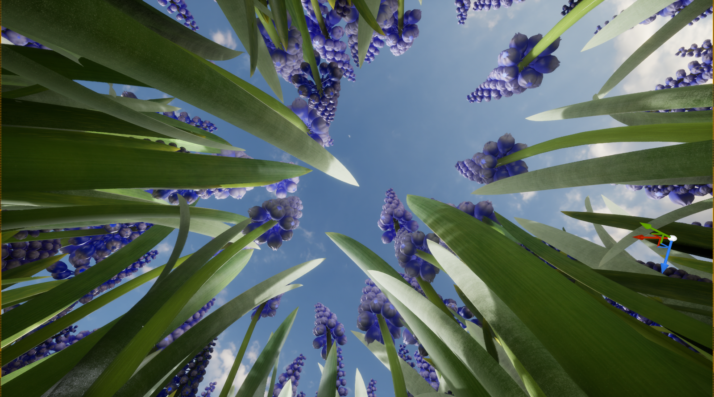
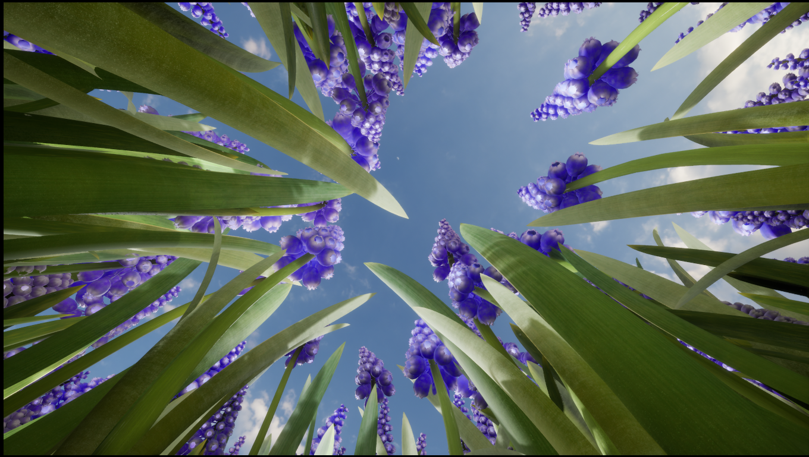

Week9
HAVE COMPLETED:
TO-DO LIST:
-
Import Itim's animated tress from Houdini to Unreal
-
Fighure out transfer grape hyacinth to particles and aniamtion won't jitter
-
Work on shot 3 layout
-
Explore Grape Hyacinth, leaves and stem shader
This week, I mainly worked on refining the grape hyacinth textures in Substance 3D Painter. The main focus was separating different texture maps so they could be assigned correctly in Unreal Engine.
Reference






These are seperate texture that I created in Substance Painter.



Also for the leaves, I starte with Substance Designer to get procedural pattern, and then
bring the pattern to the substance painter to get the customize leaves.



To understand why the rendered color differed from the viewport, Danci explained that the issue was caused by the Post Process Volume in Unreal Engine, so I manually adjusted the exposure settings.


These are texture iterations in Unreal Engine.

